3 Punkte
Werkzeugleiste / Symbol:

Menü:
Zeichnen > Kreis > 3 Punkte
Tastenkürzel:
C, 3
Kommandos:
Circle3P | c3
Beschreibung:
Konstruiert einen Kreis von drei bekannten Punkten auf der Kreislinie.
Vorgehensweise:
Bestimmen Sie den ersten Punkt mit der Maus oder geben Sie eine Koordinate in die Kommandozeile ein.
Bestimmen Sie den zweiten Punkt.
Bestimmen Sie den dritten Punkt.